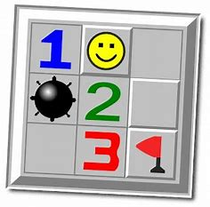

Voici mon nouveau Portfolio!
Bonjour à tous et à toutes. Ce Portfolio est créer dans le but de renseigner mon parcours de BUT Informatique de la 1ère année à la dernière.
Projets académiques
Classement joueuses de Tennis
QDev
Le but de ce projet est de créer une application capable de définir un classement des joueuses de tennis en fonction des résultats des matchs.
sept 2021
Installation d'une machine virtuelle
Réseaux et Systèmes
SAE 1.03 Installer un poste de développement sur une machine virtuelle au choix.
décembre 2021
Démineur
SDA
Le projet consiste au développement d’un jeu de démineur auquel le joueur peut interagir grâce à la console.
décembre 2021
Gestion de projet. SAE S2-05-06
GPO
Ce projet a pour but de se mettre dans la peau d'une ESN afin d'analyser les différent points de vue d'un projet.
février 2022
GPO - SAE 1-05 Recueil des besoins
GPO
Examiner les besoins d'une grande entreprises.
novembre 2021
6 qui prend
SDA
Le projet consiste en la création d’un programme représentant un jeu de cartes appelé le 6-qui-prend auquel les joueurs peuvent jouer à partir de leurs interactions avec la console.
mars 2022
Gestion d'une base de donnée
SQL
Le projet consiste à gérer et analyser une base de donnée d'un supermarché. Le but est d'analyser un grand nombre de données.
mai 2022
ICY KUBE
GPO
Définir l'économie d'une entreprise ?...
mai 2022
Démineur VB
SDA
Faire un démineur en VBA avec ne inrerface graphique homme-machine.
mai 2022